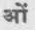

{1} Sigmund Freud, The Future of an Illusion, çev. James Strachey vd, Standard Edition, XXI; Londra: The Hogarth Press, 1961 (aslı 1927), s. 44-45.
{2} Rüyet: Dilimizde “düş” veya “görü” gibi kelimelerle karşılanan İngilizce “vision” kelimesini bu şekilde vermeyi uygun gördük -yn.
{3} Clement Wood, Dreams: Their Meaning and Practical Application (New York: Greenberg: Publisher, 1931), s. 124. “Bu kitaptaki düş malzemesi,” diye belirtiyor yazar (s. viii); “ülkenin gazetelerinde yayınlanan günlük köşem nedeniyle bana her hafta analiz için gönderilen binlerce düş arasından seçilmiştir. Bu, özel çalışmamda benim tarafımdan analiz edilen düşler de - buna eklenmiştir.” Konu üzerine standart çalışmalarda sunulan çoğu düşün tersine, bu popüler Freud’a giriş kitabındaki düşler analize girmemiş olan insanlardan geliyor. Belirgin biçimde usta işi düşlerdir bunlar.
{4} Geza Rόheim, The Origin and Function of Culture (Nervous and Mental Disease Monographs, No. 69, New York, 1943), s. 17-25.
{5} D. T. Burlingham, “Die Einfühlung des Kleinkindes in die Mutter,” Imago, XXI, s. 429; alıntılayan Geza Röheim, War, Crime and the Covenant (Journal of Clinical Psychopathology, Monograph Series, No. t, Monticello, N. Y., 1945), s. 1.
{6} Röheim, War, Crime and the Covenant, s. 3.
{7} Sigmund Freud, “The Interpretation of Dreams” (çev. A. A. Brill) The Basic Writings of Sigmund Freud (The Modern Library: Random House, Inc.), s. 308.
{8} “Three Contributions to the Theory of Sex, Contribution III: The Transformation of Puberty,” The Basic Writings of Sigmund Freud, s. 604.
{9} Sophocles, Oedipus Tyrannus, 981-983.
{10} Wood, a.g.e., s. 92-93.
{11} Doğum ve ölümünki gibi törenlerde, elbette önemli etkiler ebeveynler ve akrabalar tarafından yaşananlardır. Geçiş ayinlerinin hepsi sınanan kişiyi değil, çevresindeki herkesi etkilemeye yöneliktir.
{12} A. van Gennep, Les rites depassage (Paris, 1909).
{13} Geza Rόheim, The Eternal Ones of the Dream (New York: International Universities Press, 1945), s. 178.
{14} C. G. Jung, Wandlungen und Symbole der Libido (zweite Auflage, Leipzig Wien, 1925), s. 355: İng. çev. Beatrice M. Hinkle, Psychology of the Unconscious, A Study of the Transformations and Symbolism of the Libido (New York:Dodd, Mead and Company, 1937), s. 413.
{15} Harold Peake ve Herbert John Fleure, The Way of the Sea ve Merchant Ventures in Bronze (Yale University Press, 1929 ve 1931).
{16} Leo Frobenius, Das unbekannte Afrika (Münih: Oskar Beck, 1923), s. 10-13.
{17} Ovidius, Metamorphoses, VIII, 132 vd.; IX, 36 vd.
{18} T. S. Eliot, The Waste Land (New York: Harcourt, Brace and Company, London: Faber and Faber, 1922), 340-345. [Çorak Ülke, çev. Suphi Aytimur, Adam Yayınları, 1990, s. 55, d. 340-345.]
{19} Arnold J. Toynbee, A Study of History (Oxford University Press, 1934), Cilt VI, s. 169-175 [Tarih Bilinci, çev. Murat Belge, 1974; 1978]
{20} “Kolektif bir doğanın, dünyanın her yerinde mitlerin parçaları ve aynı zamanda bilinçdışı kökenin yerel ve tikel ürünleri olarak beliren biçim ya da imgeleri” (C. G. Jung, Psychology and Religion, [Collected Works, Cilt 11; New York ve Londra, 1958], par. 88. Aslı 1937’de İngilizce yazılmıştır. Ayrıca bkz. aynı yazar, Psychological Types, dizin ).
{21} Bu Geza Röheim’m altjiranga nakala, “ata vardı" denen bir zamanda dünya üzerinde gezinen mitsel ataları belirten bir Avustralya Aranda teriminin, altjiranga mitjina'nın çevirisidir. Altjira sözcüğü a) bir düş, b) düşte beliren varlık, ata, c) bir öykü anlamına gelir (Röheim, The Eternal Ones of the Dream, s. 210-211).
{22} Bununla birlikte Profesör Toynbee’nin Hıristiyanlığı, bu ikinci görevi öğreten tek din diye öne çıkararak mitolojik sahneyi ciddi biçimde yanlış sunduğu da kaydedilmelidir. Bütün dinler onu öğretir, dört bir yandaki bütün mitoloji ve halk gelenekleri gibi. Profesör Toynbee yanılgısına Nirvana, Buddha ve Bodhisattva’nın Doğulu fikirlerinin yıpranmış ve yanlış bir yorumunu yaparak; sonra da yanlış yorumladığı bu idealleri Tanrı Devleti’ne ilişkin Hıristiyan fikrinin derinlikli bir yeniden okumasıyla karşı karşıya getirerek ulaşıyor. Onu, dünyanın mevcut durumundan kurtuluşunun Roma Katolik Kilisesi saflarına dönmekte yatabileceğim varsayma hatasına yönelten işte budur.
{23} Frederick Pierce, Dreams and Personality (Yayım hakkı, 1931, D. Appleton and Co., yayımcılar), s. 108-109.
23 {24} Cehennemin Kapısı üzerine yazılmış olan sözler:
Per me si va nella citta dolente,
Per me si va nell' eterno dolore,
Per me si va tra la Perdua Gente.
-Dante, “Inferno [Cehennem]”, III, 1-3.
İngilizce çeviri Charles Eliot Norton’undur. The Divine Comedy of Dante Alighieri (Boston ve New York: Houghton Mifflin Company, 1902); bu ve izleyen alıntılar yayımcıların izniyle yapılmıştır.
{25} Krş. Dante, “Cehennem,” XIV, 76-84, (a.g.e., Cilt I, s. 89): “Kızıllığı beni hâlâ titreten küçük bir nehir ... günahkar kadınların aralarında paylaştığı.”
{26} Krş. Dante, “Purgatorio [Araf],” XXVIII, 22-30 (a.g.e., Cilt II, s. 214): “Bir ırmak ... küçük dalgalarıyla kıyısında çıkmış çimene doğru sola bükülüyordu. Burada dünyanın en saf suları, hiçbir şeyi gizlemeyene kıyasla, içinde birtakım karışımlar varmış gibi görünürdü.”
{27} Dante’nin Vergilius’u.
{28} “Eski zamanlarda Altın Çağ’ın ve onun mutlu halinin şarkısını söyleyenler, şans eseri Parnassos’ta bu yeri düşledi: masum insanlığın kökü buradaydı; burada hep bahardır ve onların her birinin bahsettiği nektar buradaki meyvelerdir" (“Araf,” XXVIII, 139-144; a.g.e., Cilt II, s. 219).
{29} Katha Upahishad, 3-14. (Tersi belirtilmedikçe, Upanişadlardan alıntılarım Robert Ernest Hume, The Thirteen Principal Upanishads, translated from the Sanskrit'ten olacaktır, Oxford University Press, 1931.)
Upanişadlar Hindu öğretisinde insanın doğası ve evren üzerine, ortodoks bir kurgulama geleneğinin geç dönemini oluşturur. En eskisi yaklaşık MÖ sekizinci yüzyıla tarihlenir
{30} James Joyce, A Portrait of the Artist as a Young Man (The Modern Library: Random House, Inc.), s. 239. [Sanatçının Bir Genç Adam Olarak Portresi, çev. Murat Belge]
{31} Aristoteles, On the Art of Poetry (çev. Ingram Bywater, Gilbert Murray’in önsözüyle, Oxford University Press, 1920), s. 14-16. [Poietika, çev. Nazile Kalaycı]
{32} Robinson Jeffers, Roan Stallion (New York: Horace Liveright, 1925), s. 20.
{33} Euripides, Bacchae, 1017 (çev. Gilbert Murray).
{34} Euripides, The Cretans, frg. 475, akt. Porphyrius, De abstinentia, IV, 19, çev. Gilbert Murray. Bu şiirin tartışması için bkz. Jane Harrison, Prolegomena to a Study of Greek Religion (3. baskı, Cambridge University Press, 1922), s. 478-500.
{35} Ovidius, Metamorphoses, XV, 165-167; 184-185 (çev. Frank Justus Miller, the Loeb Classical Library).
{36} Bhagavad Gita, 2:18 (çev. Swami Nikhilananda, New York, 1944).
{37} Monomit sözcüğü James Joyce'dandır, Finnegans Wake (New York: Viking Press, Inc., 1939), s. 581.
{38} Vergilius, Aeneid, VI, 892.
{39} Bu Doğu mitolojisindeki en önemli an, Batı’daki Çarmıha Gerilme’nin bir karşılığıdır. Aydınlanma Ağacı (Bo Ağacı) altındaki Buddha ve Kutsal Haç (Kefaret Ağacı) üzerindeki İsa, çok eskilere uzanan, arketip bir Dünya Kurtarıcısı, Dünya Ağacı motifi çevresindeki benzer figürlerdir. Temanın birçok başka versiyonu ileride yer alacak. Kıpırtısız Nokta ve Zeytin Dağı, Dünya Göbeği ya da Dünya Ekseni imgeleridir (bkz. ileride, s. 51.) Toprak’ın tanıklığa çağırılması, geleneksel Budist sanatında, klasik Buddha duruşunda oturan Buddha’nın sağ elinin sağ dizine dayanması ve parmaklarının yere hafifçe dokunmasıyla temsil edilmektedir.
{40} Burada, Buddhalık’ın, Aydınlanma’nın aktarılamadığını, fakat Aydınlanma’ya giden tek yol olduğunu görürüz. Adlar ve biçimlerin ötesindeki gerçeğin bu aktarılamazlığı öğretisi, Platoncu olduğu kadar Doğulu büyük geleneklerin de temelindedir. Bilimin doğruları, gözlenebilir olgulara dayanan ispatlanabilir hipotezler oldukları için aktarılabilirken, ritüel, mitoloji ve metafizik ancak aşkın bir açıklamanın kıyısına götüren rehberlerdir, her birine giden son adım herkesin kendi sessiz deneyimiyle atılmalıdır. Bu yüzden bilge için Sanskritçe sözcüklerden biri muni, “sessiz kişi”dir. Sakyamuni (Gautama Buddha’nın adlarından biri), “Sakya klanının sessiz kişisi ya da bilgesi (muni)” anlamına gelir. Yaygın biçimde öğretilen bir dünya dininin kurucusu olmasına rağmen, öğretisinin temel çekirdeği, zorunlu olarak, sessizlikle kaplıdır.
{41} Büyük ölçüde Jataka, Giriş, I, 58-75 (çev. Henry Clarke Warren, Buddhism in Translations (Harvard Oriental Series, 3) Cambridge, Mass.: Harvard University Press, 1896, s. 56-87) ve Ananda K. Coomaraswamy tarafından Buddha and the Gospel of Buddhism (New York: G. P. Putnam’s Sons, 1916, s. 24-38) olarak derlenen Lalitavistara’dan kısaltılmıştır.
{42} Çıkış, 19:3-5.
{43} Louis Ginzberg, The Legend of the Jews (Philadelphia: The Jewısh Publication Society of America, 1911), Cilt 111, s. 90-94.
{44} Kahramanın bu döngüsel macerası, kahramana, güce yönelmediği, gücün kahramanın karşısına çıkıp sonra yine ortadan kaybolduğu tufan tipi öykülerde olumsuz bir biçimde belirir. Tufan öyküleri dünyanın her yerinde görülür. Dünya tarihinin arketipsel mitinin gerekli bir kısmını oluştururlar ve tamamen şu anki tartışmanın İkinci Kısmı’na aittirler: “Kozmogonik Çevrim.” Tufan kahramanı, en kötü felaket ve günah dalgalarını bile alt edebilen insanın oluşum halindeki canlılığının bir simgesidir.
{45} Elinizdeki kitap bu durumun tarihsel bir tartışmasıyla ilgilenmemektedir. Bu iş hazırlanmakta olan bir çalışmaya ayrılmıştır. Elinizdeki kitap köken araştırması değil, karşılaştırmalı bir çalışmadır. Amacı mitlerin kendileri arasında olduğu kadar, bilgelerin onlar üzerine yaptığı yorumlar ve uygulamalar arasında da özsel paralellikleri olduğunu göstermektir.
{46} Çeviren Dom Ansgar Nelson, O.S.B., The Soul Afire içinde (New York: Pantheon Books, 1944), s. 303.
{47} Alıntılayan Epiphanius, Adversus haereses, xxvi, 3.
{48} Geride, s. 42.
{49} Bu, aydınlanışının beşinci haftasında Buddha’yı koruyan yılandır. Bkz. geride, s. 44.
{50} Alice C. Fletcher, The Hako: A Pawnee Ceremony (Yirmiikinci Yıllık Rapor, Amerikan Etnoloji Bürosu, 2. Kısım; Washington, 1904), s. 243-244. “Dünyanın yaratımında,” diyordu başşaman Bn. Fletcher’a, törende onurlandırılan tanrıları açıklarken, “daha düşük güçlerin olması ayarlandı. Tirawa-atius, yüce güç, insanın yanına gelemezdi, onun tarafından görülüp hissedilemezdi, bu yüzden daha düşük güçler sağlandı. Onlar insanla Tirawa arasında aracılık yapacaklardı.” (a.g.e., s. 27).
{51} Bkz. Ananda K. Coomaraswamy, “Symbolism of the Dome,” The Indian Historical Quarterly, Cilt XIV, No 1 (Mart 1938).
{52} Yuhanna, 6:55.
{53} A.g.e., 10:9.
{54} A.g.e., 6:56.
{55} Kuran, 5:108.
{56} Lat. En mukaddes yer -yn.
{57} Herakleitos, fr. 102.
{58} Herakleitos, fr. 46.
{59} William Blake, The Marriage of Heaven and Hell, “Proverbs of Hell.”
{60} Leo Frobenius, Und Afrika sprach. ... (Berlin: Vita, Deutsches Verglagshaus, 1912), s. 243-245. Prose Edda, “Skaldskaparmal” I’de (“Scandinavian Clas- sics”, Cilt V, New York, 1929, s. 96) Odin’e (Wothan) ilişkin anlatılan çarpıcı biçimde benzer bölümle karşılaştırınız. Ayrıca Çıkış, 32:27’deki Yehova’nın emriyle karşılaştırınız: “Herkes kılıcını kuşansın, ve kamp boyunca kapıdan kapıya geçsin, ve herkes kardeşini, herkes yoldaşını, herkes komşusunu katletsin.”
{61} Grimm’s Fairy Tales, No. 1, “The Frog King.” [Türkçesi: Grimm Masalları, 2 cilt, çev. Kamuran Şipal, İstanbul: Afa Yayınları, 1989, Cilt I, s. 7-8.]
{62} The Psychopatology of Everyday Life (Standart Baskı, VI; orjinali 1901.)
{63} Evelyn Underhill, Mysticism, A Study of the Nature and Development of Man’s Spiritual Consciousness (New York: E. P. Dutton and Co., 1911), Kısım II, “The Mystic Way,” Bölüm II, “The Awakening of the Self.”
{64} Sigmund Freud, lntroductory Lectures on Psycho-Analysis (Ing. çev. James Strachey, Standart Baskı, XVI; Londra: The Hogarth Press; 1963), s. 396-97. (Aslı, 1916-17.)
{65} Malory, Le Morte d’Arthur, I, xix. Bu karaca kovalaması ve “izlenen canavarın görülmesi Kutsal Kase Arayışı ile bağlantılı sırların başlangıcını belirtir.
{66} George A. Dorsey ve Alfred L. Kroeber, Traditions of the Arapaho (Field Columbia Museum, Yayın Sıra No: 81, Antropoloji Dizisi, Cilt V; Chicago, 1903), s. 300. Yeniden basımı, Stith Thompson, Tales of the North American Indians içinde (Cambridge, Mass., 1929), s. 128.
{67} C. G. Jung, Psychology and Alchemy (Toplu Eserler, cilt 12; New York ve Londra, 1953), 71, 73 (Aslı 1935).
{68} Wilhelm Stekel, Die Sprache des Traumes (Wiesbaden: Verlag von J. F. Bergmann, 1911), s. 352. Dr. Stekel kan rengi parıltının verem sırasında kan tükürülmesiyle ilişkisine dikkat çekiyor.
{69} Henry Clarke Warren, Buddhism in Translation (Harvard Oriental Series, 3) Cambridge, Mass.: Harvard University Press, 1896, s. 56-57’den yayımcıların izniyle alınmıştır.
{70} Bu bölümde, ve bunu izleyen sayfalar boyunca kanıtları üstüste yığmaya çalışmadım. Böyle yapmak (sözgelimi, Frazer’in Altın Dal’ındaki gibi), monomitin ana hattını daha açık kılmayıp her bölümü gereksizce uzatacaktı. Bunun yerine, her bölümde büyük ölçüde dağınık, temsil edici bir çok gelenekten birkaç çarpıcı örnek veriyorum. Çalışma boyunca kaynaklarımı, okurun değişik üslupların kendine özgü niteliklerini ayırt edebileceği şekilde değiştiriyorum. Son sayfaya geldiğinde, çok sayıda mitolojiyi gözden geçirilmiş olacaktır. Okur monomitin her bölümü için hepsinin alıntılanıp alıntılanamayacağını kendisine kanıtlamak isterse, dipnotlarda verilen kaynak kitapların bazısına başvurmalı ve öyküler çokluğunun bir kısmını taramalıdır.
{71} Süleyman’ın Meselleri, 1:24:27, 32.
{72} “Tinsel kitaplar, birden fazla ruhu ürkütmüş olan [bu] Latince deyişi sıkça alıntılarlar” (Ernest Dimnet, The Art of Thinking, New York: Simon and Schuster, Inc., 1929, s. 203-204).
{73} Francis Thompson, The Hound of Heaven, açılış dizeleri.
{74} A.g.e., sonuç.
{75} Ovidius, Metamorphoses, I, 504-553 (çev. Frank Justus Miller, the Loeb Classical Library).
{76} Ceride, s. 15.
{77} Freud: hadım edilme kompleksi.
{78} Jung, The Integration of Personality, s. 104, 106.
{79} Yılan (mitolojide dünyevi suların bir simgesidir) tam olarak Daphne’nin babası, Peneus nehrine karşılık gelir.
{80} Grimm, No 50. [Türkçesi, GM, Cilt II, s. 283-284.]
{81} The Thousand Nights and One Night, Richard F. Burton çevirisi (Bombay, 1885), Cilt I, S. 164-167.
{82} Tekvin, 19:26.
{83} Werner Zirus, Ahasverus, der Ewige Jude (Stoff und Motivgeschichte der Deutschen Literatür 6, Berlin ve Leipzig, 1930), s. 1.
{84} Geride, s. 69.
{85} Bkz. Otto Rank, Art and Artist, çev. Charles Francis Atkinson (New York: Alfred A. Knopf, Inc., 1943), s. 40-41: “Eğer nevrotiği üretken tiple kıyaslarsak, ilkinin itkiler yaşamı üzerinde abartılı bir denetimden acı çektiği bellidir. ... İkisi de temelde kendini olduğu gibi kabul eden ortalama tipten, iradelerini kendilerini yeniden biçimlendirmede deneme eğilimleriyle ayrılırlar. Fakat şu farklılık vardır: nevrotik, egosunun bu iradi yeniden yapımında, yıkıcı başlangıç çabasından öteye gitmez ve bu yüzden kendisinden bütün yaratıcı oluşumu çıkarıp onu ideolojik bir soyutlamaya aktarmayı başaramaz. Üretken sanatçı da ... ideolojik olarak biçimlenmiş bir egoyla sonuçlanan bir kendinin yeniden yaratımıyla başlar; [fakat onun durumunda] bu ego, o sırada, yaratıcı istem gücünü kendi kendisinden o kişinin ideolojik temsillerine kaydırabilecek ve böylece onu nesnel olarak kavrayabilecek bir konumdadır. Bu sürecin bireyin kendi içinde ve yalnız yapıcı değil, yıkıcı yönleriyle de belli bir ölçüde sınırlanmış olduğu belirtilmelidir. Bu da herhangi bir zorlu üretici çalışmanın ‘nevrotik’ bir doğanın hastalıklı krizleri olmaksızın çıkmadığını açıklamaktadır.”
{86} Burton’dan kısaltıldı, a.g.e., Cilt 111, s. 213-228.
{87} Bruno Gutmann, Volksbuch der Wadschagga (Leipzig, 1914), s. 144.
{88} Washington Matthews, Navaho Legends (Memoirs of the American Folklore Society, Cilt V, NewYork, 1897), s. 109.
Polen, Güneybatı Amerikan Kızılderilileri arasında bir ruhsal enerji simgesidir. Bütün törenlerde, hem şeytanı uzaklaştırmak hem de yaşamın simgesel yolunu çizmek üzere cömertçe kullanılmaktadır. (Kahramanın macerasında Navaho simgeciliği üzerine bir tartışma için bkz. Jeff King, Maud Oakes ve Joseph Campbell, Where the Two Came to Their Father, A Navaho War Ceremonial, The Bollingen Series I, 2. baskı, Princeton University Press, 1969, s. 33-49.)
{89} Dante, “Paradiso [Cennet],” XXXIII, 12-21 (çev. Charles Eliot Norton, a.g.e., Cilt III, s. 252; yayımcısı Houghton Mifflin Company’nin izniyle alıntılanmıştır).
{90} Bkz. Oswald Spengler, The Decline of the West, çev. Charles Francis Atkinson (New York: Alfred A. Knopf, Inc., 1926-28), Cilt I, s. 144. “Napolyon’un kendisinin,” diye ekliyor Spengler, “ ‘somut bir insan’ olarak Marengo’da düştüğünü varsayarsak, o zaman belirttiği şey aslında bir başka biçimde gerçekleşmiş olacaktı.” Bu anlamda ve bu ölçüde kişisellikten çıkmış olan kahraman, çağ açıcı eyleminin dönemi sırasında kültür sürecinin dinamizmini canlandırır; “bir olgu olarak kendisi ve diğer olgular arasında metafizik ritmin bir uyumu vardır” (a.g.e., s. 142). Bu Thomas Carlyle’m “Her Şeye Kadir” olan Kahraman Kral fikrine karşılık gelir (On Heroes, He- ro-Worship and the Heroic in History, VI. Konuşma).
{91} Helenistik dönemde Hermes ve Thoth’un bir karışımı, bütün sanatların ve özellikle de simyanın efendisi ve öğretmem sayılan Hermes Trismegistus, “Üç Kere En Büyük Olan Hermes” figüründe etkili olmuştu. Mistik metallerin yerleştirildiği “hermetik” olarak sıkıca kapatılmış imbik, ayrı bir dünya - mitolojik alanla karşılaştırılabilen yüksek güçlerin özel bölgesi sayılıyordu; ve orada metaller, ruhun, doğaüstünün rehberliği altında geçirdiği dönüşümlerin simgesi olan tuhaf başkalaşımlardan ve aktarımlardan geçiyordu. Hermes antik erginlenme mysteria’sının ustasıydı ve ayrıca tanrısal kurtarıcıların cisimleşmelerinde de temsil edilen, tanrısal bilgeliğin yeryüzüne inişini temsil ediyordu (bkz. ileride, s. 390-394). (Bkz. C. G. Jung, Psychologie und Alchemie, Zürih: Rascher Verlag, 1944; ayrıca, Jung, The Integration of Personality, V. Bölüm, “Simyada Kurtarılma Fikri.”)
{92} Aşağıdaki düş bilinçdışı içinde karşıtların kaynaşmasının canlı bir örneğini sunmaktadır: “Genelevlerin sokağına girdiğimi ve kızlardan birine yaklaştığımı düşledim. İçeri girdiğimde, yarı giyimli olarak bir divan üstünde yatan bir erkeğe dönüştü. Şöyle dedi: ‘Seni rahatsız etmiyor mu (şimdi bir erkek olmam)?’ Adam yaşlıca görünüyordu ve beyaz favorileri vardı. Babamın iyi bir arkadaşı olan tanıdık bir şef ormancıyı anımsatıyordu bana.” (Wilhelm Stekel, Die Sprache des Traumes, s. 70-71.) “Bütün düşler,” diye gözlemliyor Dr. Stekel, “biseksüel eğilime sahiptir. Biseksüellik, algılanamadığı yerde, gelişmemiş düş içeriği olarak saklıdır.” (a.g.e., s. 71).
{93} Kuyu bilindışının simgesidir. Bunu Kurbağa Kral’ın peri masalıyla karşılaştırın, geride, s. 63-64.
{94} Peri masalının kurbağasıyla karşılaştırın. Muhammed öncesi Arabistan’da Cinler ıssızların ve çöllerin avcı şeytanlarıydı. Tüylü ve biçimsiz, ya da hayvanlara, devekuşu ya da yılanlara benzeyen bu yaratıklar korumasız insanlar için çok tehlikeliydi. Muhammed peygamber bu kafir ruhların varlığını kabul etti (Kur’an, 37:158) ve onları, Allah’ın altında yaratılmış üç akıl -ışıktan oluşan Melekler, ateş alevinden Cinler ve dünyanın tozundan olan İnsan- olarak tanıyan Muhammedi sisteme dahil etti. Muhammedi Cin, istediği herhangi şekle girebilir, fakat ateşin ve dumanın özünden daha ağır olamaz ve kendilerim ölümlere görünür de kılabilirler. Cinlerin üç sınıfı vardır: uçanlar, yürüyenler ve yüzenler. Birçoğunun Doğru İnancı seçtikleri kabul edilir ve bunlar iyi sayılırlar; diğerleri kötüdür. Kötüler, başları iblis (“Umutsuzluğa Düşüren”) olan Düşmüş Meleklerle yakın işbirliğinde yaşar ve çalışırlar.
{95} İfrit güçlü bir Cindir. Maridler, Cinlerin daha da güçlü ve tehlikeli bir sınıfıdır.
{96} Burton’dan uyarlandı, a.g.e., Cilt III, s. 223-230.
{97} Düşteki yılanla karşılaştırın, geride, s. 77.
{98} Leonhard S. Schultze, Aus Namaland und Kalahari (Jena, 1907), s. 392.
{99} A.g.e., s. 404, 448.
{100} David Clement Scott, A Cyclopaedic Dictionary of the Mang’anja Language Spoken in British Central Africa (Edinburgh, 1892), s. 97.
Bunu on iki yaşındaki bir çocuğun şu düşüyle karşılaştırın: “Bir gece ayaklarımdan birini kaybettiğimi düşledim. Onun yerde yattığını düşündüm ve böyle bir şeyi beklemediğimden üzerine düştüm. Aynı ayağım gibiydi. Ayak birdenbire sıçradı ve ardımdan koşmaya başladı; sanırım camdan dışarı fırlayıverdim, bahçeden koşarak geçip caddeye çıktım, vargücümle koşuyordum. Woolwich’e dek koştuğumu sanıyorum ve birdenbire beni yakalayıp sarstı, o zaman uyandım. Bu ayak üzerine birkaç düş daha gördüm.”
Oğlan, denizci olan babasının denizde ayak bileğini kırdığını haber almıştı (C. W. Kimmins, Children's Dreams, An Unexplored Land; Londra: George Ailen and Unwin, Ltd., 1937, s. 107).
“Ayak,” diye yazıyor Dr. Freud, “mitlerde de bulunan oldukça ilkel bir cinsel simgedir” (“Three Essays on the Theory of Sexuality,” s. 155). Oidipous adının, “şişen ayak” anlamına geldiğine dikkat edilmeli.
{101} V. J. Mansikka’nın Hastings’in Encyclopedia of Religion and Ethics, Cilt IV, s. 628’deki makalesiyle karşılaştırın; “Demons and Spirits (Slavic).” Bu ciltte “Demons and Spirits” başlığı altında toplanan (Afrika, Okyanus, Asur-Babil, Budist, Kekik, Çin, Hıristiyan, Kıpti, Mısırlı, Yunan, İbrani, Kızılderili, Jain, Japon, Yahudi, Müslüman, Fars, Romalı, Slav, Tötonik ve Tibet çeşitlemelerine değinen) bir dizi otoritenin makaleler dağı konu için mükemmel bir giriş oluşturuyor.
{102} A.g.e., s. 629. Lorelei ile karşılaştırın. Mansikka’nın Slav orman-, ova- ve su-ruhları tartışması Hanus Mâchal’m kapsamlı Nakres slovarıskeho bajeslovi’sine (Prag, 1891) dayanmaktadır, bunun kısaltılmış İngilizce baskısı Máchal’ın Slavic Mythology’sinde bulunabilir (“The Mythology of All Races,” Cilt 111; Boston, 1918).
45 {103} İskender zamanında Pan, fallusla bağlantılı Mısır yücelerinden olan ve başka şeylerin yanısıra ıssız yolların muhafızı da olan Min ile özdeşleştirilirdi.
{104} Dionysos’la, Pan’ın Trakyalı karşılığıyla karşılaştırın.
{105} Wilhelm Stekel, Fortschritte und Technik der Traumdeutung (Viyana-Leipzig- Bern: Verlag für Medizin, Weidmann und Cie., 1935), s. 37.
Bekçi, Dr. Stekel’e göre, “bilinci ya da bir bakıma, ahlakın bütününü ve bilinçte varolan kısıtlamaları,” simgelemektedir. “Freud,” diye sürdürüyor Dr. Stekel, “bekçiyi ‘süperego’ olarak belirtirdi. Fakat o gerçekte ancak bir ‘interego’dur. Bilinç, tehlikeli arzuların ve ahlaksız eylemlerin sızmasını engeller. Düşlerdeki bekçiler, polisler ve memurlar genellikle bu anlamda yorumlanır” (a.g.e., s. 37-38).
{106} A. R. Radcliffe-Brown, The Andaman Islanders (2. basım, Cambridge University Press, 1933), s. 175-177.
{107} Görüldüğünde her zaman oldukça korkutan, siyah ve beyaz şeritlerle kaplı bir deniz yılanı.
{108} R. H. Codrington, The Melanesians,Their Anthropology and Folklore (Oxford University Press, 1891), s. 189.
{109} Jataka, 1:1. Eugene Watson Burlingame’in çevirisinden kısaltılmıştır, Buddhist Parables (Yale University Press, 1922), s. 33-34. Yayımcıların izniyle yeniden basılmıştır.
{110} Beş Silahlı Prens’in bu macerasının popüler folklorun tanınmış ve iyi bilinen evrensel katran-çocuk öyküsünün bilinen ilk örneği olduğu belirtilmiştir. (Bakanız Aurelio M. Espinosa: “Notes on the Origin and History of the Tar-Baby Story,” Journal of American Folklore, 43, 1930, s. 129-209: “A new Classification of the Fundemental Elements of the Tar-Baby Story on the Basis of Two Hundred and Sixty-Seven Versions,’’ a.g.e., 56, 1943, s. 31- 37; ve Ananda K. Coomaraswamy, “A Note on the Stickfast Motif,” a.g.e., 57, 1944, S. 128-131.)
{111} Şimşek (vajra) Budist mitolojinin, Buddhalığın (yok edilemez aydınlanmanın) dünyanın yanıltıcı gerçekliklerini sarsan ruhsal gücünü belirten başlıca simgelerinden biridir. Mutlak, ya da Adi Buda [Evren ruhu] Tibet imgelerinde Vajra-Dhara (Tibetçe: Dorje-Chanğ) “Elmas Kadar Sert Şimşeğin Sahibi” olarak temsil edilir.
Eski Mezopotamya’dan (Sümer ve Akad, Babil ve Asur) gelen tanrı resimlerinde, vajra ile aynı biçimde olan şimşek dikkati çeken bir öğedir (bkz. Levha XXI); Zeus bunlardan kaynaklanmıştır.
Ayrıca ilkel halklar arasında savaşçıların silahlarından şimşekler olarak söz edebildiğini biliyoruz. Sicut in caelo et in terra: aydınlanmış savaşçı tanrısal iradenin bir aracıdır; eğitimi yalnız bedensel değil, aynı zamanda ruhsal becerileri de içerir. Büyü (şimşeğin doğaüstü gücü), savaşçının darbelerine, fiziksel güç ve kimyasal zehir kadar ölümcül enerji verir. Mükemmel bir usta hiçbir fiziksel silaha gerek duymayacaktır; büyülü sözünün gücü yetecektir.
Beş Silahlı Prens meseli bu temaya bir örnektir. Fakat ayrıca, sadece deneysel, bedensel karakterine güvenen ya da bundan gururlanan kişinin her zaman hazırlıksız olduğunu öğretmektedir. “Burada estetik deneyimin [“beş nokta’’ beş duyuya karşılık gelir] kıvrımlarına karışabilen, fakat kendine has ahlaki bir üstünlükle kendini kurtarmayı, hatta başkalarını serbest bırakmayı başarabilen bir kahramanla karşı karşıyayız,” diye yazıyor Dr. Coomaraswamy (Journal of American Folklore, 57, 1944, s. 129).
52 {112} Jataka, 55:1, 272-275. Hafif bir değişiklikle Eugene Watson Burlingame’in çevirisinden uyarlandı, a.g.e., s. 41-44. Yayımcıları, Yale University Press’in izniyle basılmıştır.
{113} Cusalı Nicholas, De visione Dei, 9:11; alıntılayan Ananda K. Coomaraswamy, “On the One and Only Transmigrant” (Supplement to the Journal of the American Oriental Society, Nisan-Haziran 1944), s. 25.
{114} Ovidius, Metamorphoses, VII, 62; XV, 338.
{115} Ceride, s. 85.
{116} Longfellow, The Song of Hiawatha, VIII. Longfellow’un Iroquoilerin şefi Hi- awatha’ya yüklediği maceralar, tamamen Algonquin kültürünün kahramanı Manabozho’ya aittir. Hiawatha onaltıncı yüzyılın gerçek bir tarihsel kişiliğiydi, ileride, s. 335, dipnota bakınız.
{117} Leo Frobenius, Dos Zeitalter des Sonnengottes (Berlin, 1904), s. 85.
{118} Henry Callaway, Nursery Tales and Traditions of the Zulus (Londra, 1868), s. 331.
{119} Ananda K. Coomaraswamy, “Akimcanna: Self-Naughting” (New Indian Antiquary, Cilt III, Bombay, 1940), s. 6, not 14, Aquinalı Thomas, Summa Theologica, 1, 63, 3’ü alıntılıyor ve tartışıyor.
{120} Sanduka ya da sepet, balina karnına bir seçenektir. Sazların arasındaki Musa’yla karşılaştırın.
{121} Sir James Frazer, Altın Dal (tek ciltlik baskı), s. 347-349. Yayım hakkı, The Macmillan Company, 1922; izin alınarak kullanılmıştır.
{122} Duarte Barbosa, A Description of the Coasts of E ast Africa and Malabar in the Beginning of the Sixteenth Century (Hakluyt Society, Londra, 1866), s. 172; aktaran Frazer, a.g.e., s. 274-275. Macmillan Company yayımcılarının izniyle basılmıştır.
Bu Kral Minos’un boğayı Poseidon’dan sakladığında yapmayı reddettiği özveridir. Frazer’ın gösterdiği gibi, hükümdar katli ayini eski dünyada bilinen bir gelenekti. “Doğu Hindistan’da,” diye yazıyor, “kralın hükümdarlığı ve yaşamı Jüpiter’in güneşin çevresinde dönüşüyle sona ererdi. Diğer yandan Eski Yunanda, kralın kaderi her sekiz yılın ardından belirsizleşmeye başlar gibi görünüyor. ... Fazlasıyla aceleci olmaksızın, Atmalıların Minos’a her yıl yedi delikanlıyla yedi bakire gönderme alışkanlıklarının, kralın gücünün bir başka sekiz yıllık çevrimle yenilenmesiyle ilişkili olduğunu düşünebiliriz” (a.g.e., s. 280). Kral Minos’tan beklenen boğa kurbanı, geleneğin kalıbına göre sekiz yıllık döneminin sonunda kendini kurban etmesini gerektiriyordu. Fakat o, bunun yerine Atinalı delikanlıları ve bakireleri önermiş gibi görünüyor. Tanrısal Minos, canavar Minotauros’a; kendini yok eden Kral, tiran Yerinde Duran’a ve herkesin kendi rolünü sergilediği hiyerarşik devlet herkesin kendisi için yaşadığı tüccar imparatorluğuna belki de böyle dönüştü. Bu tür bir şeyin yerine eşdeğerini koyma eylemleri erken hiyerarşik devletlerin büyük dönemlerinin sonuna doğru, İÖ üçüncü ve ikinci bin yılların antik dünyasında alışılmış bir şeydi artık.
{123} Apuleius, The Golden Ass (Modern Library baskısı), s. 131-141.
{124} Knud Leem, Beskrivelse over Finnarkens Lapper (Kopenhag, 1767), s. 475- 478. İngilizce çevirisi John Pinkerton, A General Collection of the Best and Most Interesting Voyages and Travels in All Parts of the World (Londra, 1808), Cilt I, s. 477-478 içinde bulunabilir.
{125} Kadınlar öte dünyadaki şamanın konumunu belirleyemeyebilir, bu durumda ruhu vücuduna geri dönemez. Ya da rastgeldiği düşman bir şamanın ruhu onu dövüşe çağırabilir, yolunu saptırabilir. Dönmeyi başaramayan birçok şaman olduğu söylenmektedir. (E. J. Jessen, Afhandling om de Norske Finners og Lappers Hedenske Religion, s. 31. Bu çalışma Leem’in a.g.e.’inde ayrı bir ek olarak yer almaktadır.)
{126} Uno Harva, Die religiösen Vorstellungerı der Altaischen Völker (“Folklore Fellows Communications,” No 125, Helsinki, 1938), s. 558-559; G. N. Potanin, Oçerki severo-zapadnoy Mongolii (St. Petersburg, 1881), Cilt IV, s. 64-65’ı izleyerek.
{127} Geza Röheim, The Origin and Function of Culture (Nervous and Mental Disease Monographs, No 69), s. 38-39.
{128} A.g.e., s. 38.
{129} A.g.e., s. 51.
{130} Underhill, a.g.e., Kısım II, Bölüm III. Karşılaştırın, geride, s. 65, dipnot 3.
{131} Wilhelm Stekel, Fortschritte und Technik der Traumdeutung, s. 124.
{132} Swedenborgs Drömmar, 1744, “Jemte andra hans anteckningar efter original-handskrifter meddelade af G. E. Klemming” (Sttockholm 1859), alıntılayan Ignaz Jezower, Dos Buch der Traume (Berlin: Ernst Rowohlt, Verlag, 1928), s. 97.
Swedenborg’un bu düş üzerine kendi yorumu şöyleydi: “Kişinin kanatlarını görünceye dek ejderha olduğunu anlamadığı bu ejderhalar, yanlış aşkı temsil eder. Tam da bu konu üzerine yazıyordum" (Jezower, s. 490).
{133} Jezower, a.g.e., s. 166.
{134} Plutarkhos, Themistokles, 26; Jezower, a.g.e., s. 18.
{135} Stekel, Fortschritte und Technik der Traumdeuturıg, s. 150.
{136} A.g.e., s. 153.
{137} A.g.e., s. 45.
{138} A.g.e., s. 208.
{139} A.g.e., s. 216.
{140} A.g.e., s. 224.
{141} A.g.e., s. 159.
{142} A.g.e., s. 21.
{143} Stekel, Die Sprache des Traumes, s. 200. “Doğal olarak,” diye yazıyor Dr. Stekel, “‘burada ‘ölü olmak,’ ‘canlı olmak’ demektir. Yaşamaya başlıyor ve memur da onunla ‘yaşıyor.’ Birlikte ölüyorlar. Bu çok sevilen ikili intihar fantezisine ışık tutuyor.”
Ayrıca bu düşün, Lancelot’un Kraliçe Guinevere’yi Kral Ûlüm’ün kalesinden kurtarma romansında görülen ünlü evrensel mitolojik kılıçtan köprü (bıçak ağzı, geride, s. 33) imgesini de içerdiğine dikkat edilmelidir (bkz. Heinrich Zimmer, The King and the Corpse, ed. J. Campbell (New York: Bollingen Series, 1948), s. 171-172; ayrıca D. L. Coomaraswamy, “The Perilous Bridge of Welfare,” Harvard Journal of Asiatic Studies, 8).
{144} Stekel, Die Sprache des Traumes, s. 287.
{145} A.g.e., s. 286.
{146} “Soru yeni değildir," diye yazıyor Dr. C. G. Jung, “çünkü eski çağlarda o ya da bu biçimde tanrılara inanılmıştı. Sadece simgecilikteki benzersiz bir yoksullaşma bizim yeniden tanrıları ruhsal etkenler, yani bilinçdışının arketipleri olarak keşfetmemizi sağlayabilir. ... Cennet bizim için boş bir yer, bir zamanlar varolan şeylerin hoş bir anısı haline geldi. Fakat kalbimiz parıl parıl ve sırlar varlığımızın köklerinde huzursuzca kıpırdanıyor” (“Archetypes of the Collective Unconscious,” par. 50)
{147} Kur’an, 2:214.
{148} S. N. Kramer, Sumerian Mythology (American Philosophical Society Memoirs, Cilt. XXI; Philadelphia, 1944), s. 86-93. [Türkçesi: Sümer Mitolojisi, çev. Hamide Koyukan, Kabalcı Yayınevi, 1999.] Batıdaki bizler için Sümer mitolojisinin özel bir önemi vardır; çünkü pagan Keklerin, eski Yunanların, Romalıların, Slav ve Almanların dinlerine önemli bir etki olduğu gibi, Babil, Asur, Fenike ve Kutsal Kitap geleneklerinin de (sonuncusu Muhammediliğe ve İseviliğe yol açmıştır) kaynağıydı.
{149} Ya da, James Joyce’un ifade ettiği gibi: “Karşıt eşitler, doğanın ya da ruhun tek bir gücünden, onun dışavurumu yoluyla ye tek hali olarak türemiş ve uyumsuzluklarının kaynaşmasıyla yeniden birleşmek için kutuplaşmış karşıt eşitler” (Finnegans Wake, s. 92).
{150} Jeremiah Curtin, Myths and Folk-Lore of İreland (Boston: Little, Brown and Company, 1890), s. 101-106.
{151} Geride, s. 62-63.
{152} Eski Yunan panteonundaki adıyla, Artemis -yn.
{153} Ovidius, Metamorphoses, III, 138-252.
{154} Krş. J. C. Flügel, The Psycho-Analytic Study oj the Family (“The International Psycho-Analytical Library,” No 3, 4. basım; Londra: The Hogarth Press, 1931), Bölüm XII ve XIII.
“Bir yanda zihin, ruh ya da duyarlılık kavramıyla baba ya da erillik kavramı arasında; diğer yandan vücut ya da madde (matteria-anneye ait olan) ve anne ya da dişil ilke fikri arasında oldukça genel bir denklik vardır,” diye gözlüyor Professör Glügel. “[Bizim Yahudi-Hıristiyan tektanrıcılığımızda[ anneye ilişkin duygu ve coşkuların bastırılması, bu denkliğin yararına olarak insanda ya da şeylerin genel düzeninde, ruhsal öğeleri abartmak ve yüceltmek eğilimiyle birlikte insan bedenine, Dünyaya ve bütün maddesel Evrene karşı, güvensizlik, rahatsızlık, tiksinme ya da düşmanlık eğilimi doğurmuştur. Felsefede görülen idealist eğilimlerin birçoğunun çekiciliğini, birçok zihinde anneye karşı bu eylemin bastırılmasına borçlu olduğu ve daha dogmatik ve dar maddecilik biçimlerinin belki de kökende anneyle bağlantılı olan bastırılmış duygulara dönüşü temsil ettiği söylenebilir.” (a.g.e., s. 145, not 2).
{155} Hinduizmin kutsal yazıları (Şaştralar) dört sınıfa ayrılmıştır: (1) Dolaysız tanrısal bildiriler sayılan Şruti; bunlar dört Veda’yı (eski ilahi kitapları) ve Upanişadlar’ın (eski felsefe kitapları) bir kısmını kapsar; (2) ortodoks bilgelerin geleneksel öğretilerini, yerel törenler için kuralları ve birtakım laik ve dinsel hukuk çalışmalarını içeren Smriti; (3) en güzel Hindu mitolojileri ve destanları olan Purana; bunlar kozmogonik, teolojik, astronomik ve fiziksel bilgi taşır; ve (4) Tantralar, tanrılara tapınma ile normalötesi güç elde edilmesi için kullanılan teknikleri ve törenleri anlatan metinler. Tantralar arasında, dolaysızca Evrensel Tanrı Şiva ve Tanrıça Parvati’nin bildirdiği sanılan önemli bir grup metin vardır. (Bu nedenle, “Beşinci Veda” diye anılırlar.) Bunlar Hindu ve Budist ikonografisinin ileri biçimleri üzerinde kalıcı bir etkileri olan ve “Tantra” adıyla bilinen bir mistik geleneği destekler. Tantra simgeciliği ortaçağ Budizmiyle Hindistan’dan Tibet’e, Çin’e ve Japonya’ya taşınmıştır.
Mücevherler Adası’nın aşağıdaki tasviri Sir John Woodroffe’un, Shakti and Shakta (Londra ve Madras, 1929), s. 39 ve Heinrich Zimmer’in, Myths and Symbols in Indian Art and Civilization, ed. J. Campbell (The Bollingen Series, 1946), s. 197-211 adlı kitaplarına dayanmaktadır. Mistik adanın bir tasviri için, bkz. Zimmer, Resim 66.
{156} The Gospel of Sri Ramakrishna, İngilizceye Swami Nikhilananda’nın bir önsözüyle çevrilmiştir (New York, 1942), s. 9.
{157} A.g.e., s. 21-22.
{158} Standish H. O’Grady, Silva Cadelica (Londra: Williams and Norgate, 1892), Cilt II, s. 370-372. Değişik çeşitlemeleri Chaucer’ın Canterbury Tales, “The Tale of the Wyf of Bathe’’de; Gower’m Tak of Florent’inde; onbeşinci yüzyıl ortası şiiri The Weddynge of Sir Gawerı and Dame Ragnell'de ve onyedinci yüzyıl baladı The Marriage of Sir Gawaine’de bulunabilir. Bkz. W. F. Bryan ve Germaine Dempster, Sources and Analogous of Chaucer’s Canterbury Tales (Chicago, 1941).
{159} Guido Guinicelli di Magnano (1230-75?), Of the Gentle Hearth, çev. Dante Gabriel Rossetti, Dante and his Circle (1874 basımı; Londra: Ellis and White), s. 291.
{160} Vespers’de Kutsal Bakire Meryem Yortusu Şöleni için karşılıklı okunan ilahiler (15 Ağustos): Aşai Rabbani kitabından
{161} Hamlet, I, ii, 129-137.
{162} Oedipus Coloneus, 1615-17.
{163} Shankaracharya, Vivekachudamani, 396 ve 414, çev. Swami Madhavananda (Mayavati, 1932).
{164} Jacobus de Voragine, The Golden Legend, LXXVI, “Saint Petronilla, Virgin.” (Daphne öyküsüyle karşılaştırın, geride, s. 75.) Daha sonra Kilise, Aziz Peter’in çocuk sahibi olduğunu düşünmeyi pek istemediğinden, Petronilla’dan onun vesayeti altındaki biri olarak bahseder.
{165} A.g.e., CXVII.
{166} Gustave Flaubert, La tentation de Saint Antoine (La reine de Saba).
{167} Cotton Mather, Wonders of the Invisible World (Boston, 1693), s. 63.
{168} Jonathan Edwards, Sinners in the Hands of an Angry God (Boston, 1742).
{169} Levha IX. Bu etkili imgenin simgeciliği Ananda K. Coomaraswamy, The Dance of Shiva (New York, 1917), s. 56-66 ve Heinrich Zimmer, Myths and Symbols in Indian Art and Civilization, s. 151-175 tarafından oldukça iyi biçimde açıklanmıştır. Özetle: uzatılmış sağ el, her vuruşu zamanın, yaratılışın ilk ilkesi olan zamanın vuruşu olan davulu tutar; uzatılmış sol el meşaleyi, yaratılmış dünyanın yıkımının meşalesini tutar; ikinci sağ el “korkma” hareketi yaparken, kaldırılmış sol ayağı gösteren ikinci sol el “fil”i simgeleyen bir konumda tutulur (fil “dünya cangılı içinde yol açıcı,” yani tanrısal rehberdir); sağ ayak bir cücenin, ruhların Tanrıdan maddeye geçmesini belirten “Bilmeme” demonunun sırtına konmuş, fakat sol ayak ruhun serbest bırakılışını gösterir biçimde kaldırılmıştır: sol, “fil eli”nin işaret ettiği ayaktır ve “Korkmama” güvencesine neden olur. Tanrı’nın başı, savrulan kollar ve yavaşça yere basan sağ topuğun ritmiyle simgelenen yaratılış ve yıkım dinamizminin ortasında dengelenmiş, sakin ve kıpırtısızdır. Bu merkezde her şey kıpırtısız demektir. Şiva’nın sağ kulak deliği bir erkeğinki, solu bir kadınınkidir; çünkü Tanrı karşıt çiftleri içerir ve onların ötesindedir. Şiva’nın yüz ifadesi ne acılı ne de neşelidir, fakat dünyanın saadet ve acısının ötesinde, ama yine de içinde olan Duygusuz Zerafet’in çehresidir. Coşkuyla dökülen lüleler, artık yaşam dansıyla uçan Hintli Yoga’nın uzun taranmamış saçlarını temsil eder; çünkü yaşamın neşe ve hüzünlerinde tanınan ve içe çekilme meditasyonuyla bulunan varlık, aynı, evrensel, ikili olmayan, Varlık-Bilinç-Saadet’in iki yönüdür. Şiva’nın bilezikleri, kollukları, halhalları ve brahman ipi▲ canlı yılanlardır.
▲ Brahman ipi Hindistan’ın üç üst kastının (iki kez doğanlar denen) üyelerinin giydiği pamuk bir iptir. Baştan ve sağ koldan geçirilir, sol omuzda durur ve gövdeyi (göğüs ve sırttan) çaprazlamasına geçerek sağ kalçaya uzanır. Bu iki kez doğanın ikinci doğumunu simgeler; ipin kendisi eşiği ya da güneş kapısını temsil etmektedir, böylece iki kez doğan aynı anda hem zaman hem de ebediyet içinde yaşamaktadır.
Bu, onun, bütün canlılarıyla birlikte evrenin içinde ve evrenin kendisi olarak tezahürünün maddesel ve biçimsel nedeni olan Tanrı’nın gizemli Yaratıcı Enerjisiyle, Yılan Gücüyle güzelleştirilmesi demektir. Şiva’nın saçlarında, ölümün simgesi, Yıkımın Efendisinin alın takısı olan bir kafatasıyla birlikte onun dünyaya diğer ihsanları olan doğumun ve çoğalmanın simgesi olan bir hilal de görülür. Ayrıca saçlarında, sarhoş edici bir madde hazırlanan datura bitkisinin çiçeği vardır (Dionysos ve Ayin şarabıyla karşılaştırın). Lülelerinde tanrıça Ganj’ın küçük bir tasviri bulunur; çünkü tanrısal Ganj’ın yaşam ve kurtuluş sunan sularını, daha sonra insanlığın ruhsal ve fiziksel yenilenmesi için hafifçe dünyaya akıtmadan önce kendi başında karşılayan odur. Tanrı’nın dans duruşu, dört bilinçlilik halinin ve bunların deneyim alanlarının sözel eşdeğeri olan simgesel AUM  ya da hecesi olarak görselleştirilir. (A: uyanan bilinç; U: düş bilinci; M: düşsüz uyku; kutsal hecenin çevresindeki sessizlik Tezahür Etmemiş Aşkınlık’tır. Bu hecenin bir tartışması için, bkz. ileride, s. 301-302, ve s. 302, dipnot 16.) Tanrı böylece tapınanın içinde olduğu gibi dışındadır da.
Böyle bir figür, oyulmuş imgenin işlev ve değerini sergiler ve putlara tapınanlar arasında uzun vaazların neden gereksiz olduğunu gösterir. Dindar kişinin, tanrısal simgenin anlamıyla, derin sessizlik ve kendine uygun bir zaman içinde karşılaşmasına fırsat tanınır; ve bunların söyledikleri tanrıların söyledikleridir. Yılanlar yerine altından yapılırlar ve altın (aşınmayan metal) ölümsüzlüğü simgeler; yani ölümsüzlük, güzelliğin gövdesi olan Tanrının gizemli yaratıcı enerjisidir.
Yaşamın ve yerel geleneklerin birçok başka ayrıntısı, insanbiçimci putların ayrıntıları içinde kopyalanır, yorumlanır ve böylece geçerli kılınır. Bu şekilde, yaşamın bütünü meditasyon için bir desteğe dönüştürülür. Kişi her zaman için sessiz bir vaazın ortasında yaşar.
{170} ≈ Yazar, atonement: kefaret, gönül alma sözcüğüyle oynuyor; hecelerinden “bir anda/bir olmak” anlamı çıkarıyor -çn.
{171} Ya da “interego” (bkz geride, s. 99, dipnot 45).
{172} İnanna’nın geçtiği sayısız eşikle kıyaslayın, geride, s. 124-127.
{173} Pusulanın dört yönünü temsil eden dört simgesel renk, Navaho ikonografisinde ve tapımında etkin bir rol oynar. Bunlar sırasıyla, doğu, güney, batı ve kuzeyi belirtecek şekilde beyaz, mavi, san ve siyahtır. Afrikalı oyunbaz tanrı Edşu’nun şapkasındaki kırmızı, beyaz, yeşil ve siyaha karşılık gelirler (bkz. geride, s. 58): çünkü Babanın Evi, Babanın kendisi gibi, Merkezi simgelemektedir.
İkiz Kahramanlar, bu yönlerden herhangi birinin hata ve sınırlamalarından pay alıp almadıklarının anlaşılması için dört yönün simgeleriyle sınanırlar.
{174} Matthews, a.g.e., s. 110-113.
{175} Ovidius, a.g.e., II (Miller’den uyarlanmıştır; Loeb Library).
{176} Kimmins, a.g.e., s. 22.
{177} Wood, a.g.e., s. 218-219.
{178} Geride, s. 21.
{179} W. Lloyd Warner, A Black Civilization (New York ve Londra: Harper and Brothers, 1937), s. 260-285.
{180} “Baba [yani, sünnetçi] çocuğu annesinden ayıran kişidir,” diye yazar Dr. Rόheim. “Çocuktan kesilen aslında annedir. ... Sünnet derisinin başı annenin içindeki çocuktur” (Geza Röheim, The Eternal Ones of the Dream, s. 72- 73).
{181} Sir Baldwin Spencer ve F. J. Gillen, The Arurıta (Londra: Macmillan and Co., 1927), Cilt I, s. 201-203.
{182} Röheim, The Eternal Ones of the Dream, s. 49 vd.
{183} A.g.y., s. 75.
{184} A.g.y., s. 227, R. ve C. Berndt, “A Preliminary Report of Field Work in the Ooldea Region, Western South Australia,” Oceania, XII (1942), s. 323’den aktararak.
{185} Rheim, The Eternal Ones of the Dream, s. 227-228, akt. D. Bates, The Passing of the Aborigines (1939), s. 41-43.
{186} Röheim, The Eternal Ones of the Dream, s. 231.
{187} R. H. Mathews, “The Wallonggura Ceremony,” Queensland Geography Journal, N. S., XV (1899-1900), s. 70; akt. Röheim, The Eternal Ones of the Dream, s. 232.
{188} Kayda geçirilmiş bir olayda, çocuklardan ikisi bakmamaları gereken zamanda yukarı baktılar. “O zaman yaşlı erkekler birer ellerinde taş bıçakla ilerledi. Çocukların her ikisinin de damarlarını yardılar. Kan fışkırdı ve diğer erkekler bir ölüm çığlığı attı. Çocuklar ölmüştü. Yaşlı wirreenun'lar (hekimler), taş bıçaklarını kana bulayarak, onları oradaki herkesin dudağına değdirdiler. ... Boorah kurbanlarının vücutları pişirildi. Her beş Boorah’tan biri bu etten bir parça yedi; başkalarının bunları seyretmesine izin verilmedi” (K. Lanloh Parker, The Euahlayi Tribe, 1905, s. 72-73; akt. Röheim, The Eternal Ones of the Dream, s. 232).
{189} Çağdaş Malinezya’daki ilgi çekici bir simgesel dizge bulgusu, İÖ ikinci bin yılın Mısır-Babil, Truva-Girit “labirent kompleksi”yle özde aynıdır, krş. John Layard, Stone Men of Malekula (Londra: Chatto and Windus, 1942). W. F. J. Knight, Cumaean Gates (Oxford, 1936) içinde Malekulalı “ruhun yeraltına yolculuğu”nun Aineias’ın klasik inişi ve Babil’de Gılgamış’m inişiyle olan apaçık ilişkisini tartışmıştır. W. J. Perry, The Children of the Sun (New York: E. P. Dutton and Co., 1923), Mısır ve Sümer’den Okyanus alanı boyunca Kuzey Amerika’ya dek uzanan bu kültür-sürekliliginin kanıtlarını bulduğunu düşünmüştü. Birçok uzman eski Yunan ve ilkel Avustralya erginlenme törenlerinin ayrıntıları arasındaki yakın eşdeşliklere dikkat çekmiştir; özellikle Jane Harrison, Themis, A Study of the Social Origin of Greek Religion (göz. geç. 2. Basım; Cambridge University Press, 1927). Değişik arkaik uygarlıkların mitolojik ve kültürel düzenlerinin yeryüzünün en uzak köşelerine hangi yollarla ve hangi çağlarda dağılmış olduğu hâlâ belirsizdir; yine de kategorik olarak antropologlarımız tarafından incelenmiş “ilkel kültür” denen şeylerden çok azmin (belki hiçbirinin) o yerlere özgü olduğu söylenebilir. Bunlar daha çok, değişik topraklarda, genellikle çok daha basit koşullar altında ve başka ırklar tarafından geliştirilen adetlerin yerel uyarlamaları, bölgesel bozunumları ve çok çok eski sabitlenmeleridirler.
{190} Euripides, The Bacchae, 526 vd.
{191} Aeschylus, Frg. 57 (Nauck); akt. Jane Harrison (Themis, s. 61), eski Yunan ve Avustralya erginlenme ayinlerinde boğa kışkırtıcısının rolünü tartışması sırasında. Boğa kışkırtıcısı konusuna bir giriş için, bkz. Andrew Lang, Custom and Myth (göz. geç. 2. Basım; Londra: Longmans, Green, and Co., 1885), s. 29-44
{192} Bunların hepsi de Sir James G. Frazer tarafından Altın Dal’da anlatılmış ve uzun uzun tartışılmıştır.
{193} İbraniler, 9:13-14.
{194} Le P. A. Capus des Peres-Blancs, “Contes, Chants et Proverbes des Ba- sumbwa dans l’Afrique Orientale,” Zeitschrift für AJrikanische und Oceanisc- he Sprachen, Cilt III (Berlin, 1897), s. 363-364.
{195} Kur’an, 10:31.
{196} Geride, s. 84.
{197} Geride, s. 58. Basumbwa (Büyük Şef Ölüm öyküsü) ve Wachaga (Kyazimba öyküsü) Doğu Afrikalı halklardır; Yoruba (Edşu öyküsü) Nijerya’nın Doğu Kıyısı kolonisinde yaşar.
{198} Kur’an, 6:59, 60.
{199} Luka, 2:7.
{200} Ovidius, Metamorphoses, VIII, 618-724.
{201} Kur’an, 2:115.
{202} Katha Upanishad, 3:12.
{203} Eyüb, 40: 7-14.
{204} A.g.y., 42: 5-6.
{205} A.g.y., 42: 16-17.
{206} Leon Stein, “Hassidic Music,” The Chicago Jewish Forum, Cilt II, No. 1 (Sonbahar, 1943), s. 16.
{207} Hinayana Budizmi (Saylon, Burma ve Siyam’da varolan Budizm) Buddha’yı bir insan kahraman, yüce bir ermiş ve bilge olarak kabul eder. Öte yandan, Mahayana Budizmi ise (kuzeyin Budizmi), Aydınlanmış Olanı, evrensel aydınlanma ilkesinin bir bedenlenmesi, bir dünya kurtarıcısı olarak görür.
Bodhisatva Buddhalık aşamasındaki bir kişidir: Himayana görüşüne göre, bir sonraki reenkarnasyonunda bir Buddha olacak olan usta; Mahayana görüşüne göreyse (izleyen paragrafların göstereceği gibi) özellikle evrensel merhamet ilkesini temsil eden bir tür dünya kurtarıcısı. Bodhisattva (Sanskritçe) sözcüğünün anlamı şudur: “varlığı ya da özü aydınlanma olan.” Mahayana Budizmi bir çok Bodhisatva ve birçok da geçmiş ve gelecek Buddhalar panteonu geliştirmiştir. Bunların hepsi, varolmama boşluğunda muhteşem bir baloncuk gibi duran, tüm varoluşun en yüce kavranabilir kaynağı ve en son sınırı olan aşkın olanın, bir ve tek Adi-Buda’nın (“İlksel Buddha”) (geride, s. 105, dipnot 51’le krş.) tezahür eden güçlerini yansıtır.
{208} Prajna-Paramita-Hridaya Sutra; “Sacred Books of the East," Cilt XLIX, Kısım II, s. 148; ayrıca, s. 154.
{209} Vajracchedika (“Elmas Kesici”), 17; a.g.y., s. 134.
{210} Amitayur-Dhyana Sutra, 19; a.g.y., s. 182-183.
{211} Yang, aydınlık, etkin, eril ilke ve Yin, karanlık, edilgen ve dişil ilke; bütün biçimler dünyası (“on bin şey”) bunların etkileşimleriyle olur ve oluşur. Tao'dan çıkar ve birlikte onu görünür kılarlar: varlığın kaynak ve yasasını. Tao “yol” demektir. Tao doğanın, kaderin, kozmik düzenin yolu ya da gidişatıdır; görünür olan Mutlak. Tao bu yüzden “gerçek,” “doğru yönelim” de demektir. Yang ve Yin birlikte Tao olarak şöyle gösterilir: Tao kozmosun temelidir. Tao yaratılmış her şeyin içinde vardır.
{212} “Erkeklere Hermes’im; kadınlara Aphrodite olarak görünürüm: ebeveynlerimin ikisinin de işaretini taşımaktayım” (Anthologia Graeca ad Pidem Codices, Cilt II).
“Onun bir yanı babasından, diğer her şeyi anasmdandır” (Martialis, Epigrammata, 4, 174; Loeb Library, Cilt II, s. 501).
Ovidius’un Hermaphroditos anlatımı Metamorphoses, IV, 288 vd.’da görülür.
Hermaphrodites’in birçok klasik imgesi bize ulaşmıştır. Bkz. Hugh Hampton Young, Genital Abnormalities, Hermaphroditism, and Related Adrenal Diseases (Baltimore: William and Wilkins, 1937), Bölüm I, “Hermaphroditism in Literatüre and Art.”
{213} Symposion.
{214} Tekvin, 1:27.
{215} Midrash, Tekvin yorumu, Rabbah 8:1.
{216} Geride, s. 106.
{217} İleride, s. 318-320.
{218} Krş. James Joyce: “Göğün ekonomisinde ... artık evlilik yoktur, yücelen erkek, androjen bir melek, kendinin karısı olur” (Ulysses, Modern Library baskısı, s. 210).
{219} Sophokles, Oedipous Tyrannos. Ayrıca bkz. Ovidius, Metamorphoses, III, 324 vd., 511 ve 516. Hermaphrodites’in rahip, tanrı ya da kâhin olduğu başka örnekler için bkz. Herodotos, 4, 67 (Rawlinson baskısı, Cilt III, s. 46-47); Theoprastos, Kharakteres, 16.10-11; ve J. Pinkerton, Voyage and Travels, bölüm 8, s. 427; “A New Account of the East Indies,” Alexander Hamilton. Bunlar Young tarafından aktarılmıştır, a.g.e., s. 2 ve 9.
{220} Bkz. Zimmer, Myths and Symbols in lndian Art and Civilization, Resim 70.
{221} Bkz. Levha X.
{222} Bkz. B. Spencer ve F. J. Gillen, Native Tribes of Central Australia (Londra, 1899), s. 263; Röheim, The Eternal Ones of the Dream, sb, 164-165. Altyarık yapay olarak belli bir sınıf hermaphroditeleri andıran bir hypospadias yaratır. (Bkz. hermaphrodite Marie Ange portresi, Young, a.g.e., s. 20.)
{223} Rόheim, The Eternal Ones of the Dream, s. 94.
{224} A.g.y., s. 218-219.
{225} Bodhisatva Darmakara’nın şu görünümüyle karşılaştırın: “Ağzından sandal ağacının tatlı ve göksel kokusu geliyordu. Saçının her gözeneğinden lotus kokusu yükseliyordu ve herkese hoş görünüyordu, cana yakın ve güzeldi; en hoş parlak rengin tamlığıyla süslenmişti. Vücudu bütün iyi işaret ve izlerle kaplandığından, saçının gözeneklerinden ve avuçlarından her türden çiçekler, tütsüler, kokular, kolyeler, yağlar, şemsiyeler, bayraklar ve sancaklar ve her türden müzik aleti şeklinde değerli ziynetler çıkıyordu. Ve yine, avuçlarından her türden yiyecek ve içecekler, sert ve yumuşak yiyecekler, ve şekerler ve her türden eğlenceler ve hazlar çıkıyordu” (The Larger Sukhavati-Vyuha, 10; “Sacred Books of the East,” Cilt XL1X, Kısım 11, s. 26-27).
{226} Rόheim, War, Crime and the Covenant, s. 57.
{227} A.g.y., s. 48-68.
{228} I Samuel, 17:26.
{229} Kur’an 4:104
{230} “Çünkü kin hiçbir zaman kinle sönmez: kin aşkla söner, bu eski bir kuraldır” (Budist Dhammapada, l:5’den; “Sacred Books of the East,” Cilt X, Kısım I, s. 5; çev. Max Müller).
{231} Luka, 6:27-36.
Şu Hıristiyan mektubuyla karşılaştırın:
Tanrımızın Yılı 1682
Yaşlı ve sevgili, B. John Higginson’a:
Şu anda denizde, kendilerine Kuveykırlar diyen ve başsahtekarları W. Penn’in önderlik ettiği 100 ya da daha çok sapkını ve habisi taşıyan Wel- come adlı bir gemi var. Büyük Mahkeme, Porpoise adlı brikin kaptanı Malachi Huscott’a Welcome’ı, Cape of Cod’un olabildiğince yakınına sürüklemesi ve bahsi geçen Penn ile imansız takımını esir etmesine dair kutsal emir verdi, böylece Tanrı hoşnut kalacak ve bu yeni ülkenin toprağı bu insanların çirkef tapınçlarıyla kirlenmeyecektir. Hepsi kölelerin rom ve şekerle doğru dürüst değiş tokuş edilebildiği Barbados’ta satılarak iyi kâr edilebilir ve lanetlileri cezalandırarak yalnız Tanrı’ya büyük iyilik etmiş olmakla kalmayacak, Vekili ve halkı için de büyük iyilik yapmış olacağız.
İsa’nın izinde sizinle,
COTTON MATHER
(Profesör Robert Phillips, American Goverment and İts Problems, Houghton Mifflin Company, 1941 ve Dr. Karl Menninger, Love Against Hate, Harcourt, Brace and Company, 1942, s. 211’de yeniden basılmıştır.)
{232} Matta, 22: 37-40; Markos, 12:28-34; Luka, 10: 25-37. İsa’nın ayrıca müritlerini “bütün uluslara öğretmekle” görevlendirdiği (Matta, 28:19), ama işitmeyenlerin zulüm görmesini ve yağmalanmasını, “seküler orduya” bırakılmasını söylemediği bildirilir, “işte, sizleri kurtlar arasına koyunlar gibi gönderiyorum: o yüzden yılanlar kadar akıllı ve güvercinler kadar zararsız olun” (a.g.y., 10:16).
{233} Dr. Karl Menninger (a.g.e., s. 195-196), Yahudi rabbilerinin, Protestan ve Katolik rahiplerinin bazen, kuramsal farklılıklarını geniş ölçüde uzlaştırabilseler de, ebedi yaşamı getirecek olan kural ve düzenlemeleri anlatmaya başladıklarında umutsuzca birbirlerinden uzaklaştıklarını belirtmektedir. “Bu aşamaya dek izlence kusursuzdur,” diye yazıyor Dr Menninger. “Fakat eğer kimse kural ve düzenlemelerin ne olduğunu bilmiyorsa, her şey saçmalığa dönüşür.” Buna yanıt, elbette Ramakrişna tarafından verilmektedir: “Tanrı değişik istekler, zamanlar ve ülkeler için değişik dinler yapmıştır. Tüm öğretiler birçok yol demektir; fakat bir yol hiç de Tanrının Kendisi değildir. Gerçekten de, kişi Tanrı’ya, kendini tüm kalbiyle adayarak yollardan herhangi birini izlerse ulaşabilir. ... Kişi pastayı enlemesine de boylamasına da kremalayabilir. Her iki şekilde de tatlı olacaktır” (The Gospel of Sri Ramakrishna, New York, 1941, s. 559).
{234} Matta, 7:1.
{235} “Ve çapulcular takımının birinin yolunu beklemesi gibi, rahipler takımı da ikrar yolunda kıyım yapar. ... Kralı kötülükleriyle ve prensleri yalanlarıyla mutlu ederler” (Hoşea, 6:9; 7:3)
{236} İslam’ı anmıyorum, çünkü orada da öğreti kutsal savaş terimleriyle aktarılır ve böylece bulanıklaştırılır. Burada olduğu gibi orada da, gerçek savaş alanının coğrafi değil ruhsal olduğunu anlamıştır birçok kimse (krş. Rûmi, Mesnevi, 2. 2525: “Neymiş ‘boyun vurmak’? Dünyevi ruhu kutsal savaşta katletmek.”); yine de, Muhammedi ve İsevi öğretilerin yaygın ve ortodoks ifadeleri o kadar acımasızlaşmıştır ki, her iki misyonda da aşk eylemini ayırt edebilmek için derinlemesine bir okuma gerekir.
{237} “The Hymn of the Final Precepts of the Great Saint and Bodhisattva Mila- repa” (ca. MS 1051-1135), Jetsün-Kahhum, ya da Lama Kazi Dawa-Sam- dup’un İngilizce anlatımına göre, Jetsün-Milarepa’nın Biyografik Tarihi’nden, yayıma hazırlayan W. Y. Evans-Wentz, Tibet’s Great Yogi Milarepa (Oxford University Press, 1928), s. 285.
{238} “The Hymn of the Yogic Precepts of Milarepa," a.g.e., s. 273.
“Her Şeyin Boşluğu” (Sanskritçe: sunyata, “hiçlik”) bir yandan, görüngüsel dünyanın yanıltıcı doğasına ve diğer yandan, Tükenmez Olana görüngüsel dünyadan kendi bildiğimiz türden nitelikler atfetmenin uygunsuzluğuna göndermede bulunur.
Hiçliğin Göksel Işımasında,
Orada ne şeyin gölgesi ne de kavram bulunur,
Yine de tüm bilgi nesnelerini kaplamaktadır O;
Değişmez Hiçliğe Hürmetler Olsun.
(“Hymn of Milarepa in praise of his teacher," a.g.e., s. 137.)
{239} Avalokita (Sanskritçe) = “aşağı bakma,” ama ayrıca, “görünen”; isvara = “Tanrı”; böylece, hem “[Acımayla] Aşağı Bakan Tanrı,” hem de “[İçte] Görünen Tanrı” (a ve i, Sanskritçe’de e’ye kaynaşır; bu yüzden Avalokitesvara). Bkz. W. Y. Evans-Wentz, Tibetan Yoga and Secret Doctrine (Oxford University Press, 1935), s. 233, not 2.
{240} Aynı fikir Upanişadlarda da sıkça belirtilmektedir; yani, “Bu benlik kendini şu benliğe verir, o benlik kendini bu benliğe verir. Böylece birbirlerini elde ederler. Bu biçimde öte dünyayı kazanır, o biçimde bu dünyayı deneyimler” (Aitareya Aranyaka, 2. 3. 7.). Bu İslam mistiklerince de bilinmektedir: “Otuz yıl boyunca yüce Tanrı benim aynamdı, şimdi ben kendimin aynasıyım; yani, ben olan değilim ben artık, aşkın Tanrı kendisinin aynasıdır. Kendi aynamın kendim olduğunu söylüyorum; çünkü benim dilimden konuşan Tanrıdır ve ben kayboldum” (Bayezid, akt. The Legacy of İslam, T. W. Arnold ve A. Guillaume, editörler, Oxford Press, 1931, s. 216).
{241} “Beyazıt olmaktan derisinden sıyrılan yılan gibi çıktım. Sonra baktım. Sevenin, sevilenin ve sevginin bir olduğunu, birliğin dünyasında her şeyin bir olabildiğini gördüm” (Bayezid, a.g.e. akt.)
{242} Hoşea, 6:1-3.
{243} Brihadaranyaka Upanishad, 1. 4. 3. Krş. ileride, s. 316.
{244} “Nirva (Sanskritçe) fiili, kelime anlamıyla, ‘üfleyip söndürmek’tir, geçici olarak değil, ama bir ateşin sönmesi gibi. ... Yakıtı tükenen yaşam ateşi zihin engellendiğinde ‘etkisizleşir,’ yani söner, kişi, ‘Nirvana huzuruna,’ ‘Tanrı’da ruhsuzlaşmaya’ ulaşır. ... Ateşlerimizi beslemekten vazgeçersek huzura ulaşırız, başka bir gelenekte bunun ‘kavrayışı aştığı’ söylenir” (Ananda K. Coomaraswamy, Hinduism and Buddhism; New York: The Philosophical Library, tarihsiz, s. 63). “Ruh-suzlaşma” sözcüğü Sanskritçe “nirvana"nın birebir olarak Latinleştirilmesiyle elde edilir; nir = “dışa, ileri, dışa doğru, dışına, dışından, uzağa, -dan uzağa”; vana = “üflenmiş”; nirvana = “üflenip söndürülmüş, kaybolmuş, tükenmiş.”
{245} Sigmund Freud, Beyond the Pleasure Principle (çev. James Strachey; Standart basım, XVIII, Londra; The Hogarth Press, 1955). Ayrıca bkz. Karl Menninger, Love Aganist Hate, s. 262.
{246} Vajracchedika, 32; “Sacred Books of the East,” a.g.e., s. 144.
{247} Daha küçük Prajna-Paramita-Hridaya Sutra; a.g.y., s. 153.
{248} Nagarjuna, Madhyamika Shastra.
“Ölümsüz olanla ölümlü olan uyumlu biçimde karışmıştır, çünkü ne bir ne de ayrıdırlar” (Aşvaghoşa).
“Bu görüş,” diye yazıyor Dr. Coomaraswamy, bu metinleri aktararak, “Yas klesas so bodhi, yas samsaras tat nirvanam, ‘Günah olan ayrıca Bilgeliktir, Varolmanın alanı ayrıca Nirvanadır’ aforizmasında dramatik bir güçle ifade edilmiştir” (Ananda K. Coomaraswamy, Buddha and the Gospel of Buddhism; New York: G. P. Putnam’s Sons, 1916, s. 245).
{249} Bhagavad Gita, 6:29, 31.
Bu, Bn. Evelyn Underhill’in “Mistik Yolun hedefi: Gerçek Birleştirici Yaşam: Tanrısal Doğurganlık hali: Tanrılaşma” olarak (a.g.e., çeşitli yerlerde) ifade ettiği şeyin kusursuz gerçekleşmesini temsil eder. Bn. Underhill, yine de, Prof. Toynbee gibi (geride, s. 31, dipnot), bu idealin Hıristiyanlığa has olduğunu sanmak gibi yaygın bir hata yapmaktadır. “Batılı aklın bugüne dek," diye yazar Profesör Salmony, “kendini öne çıkarma ihtiyacıyla yanılmış olduğu söylenebilir rahatlıkla” (Alfred Salmony, “Die Rassenfrage in der Indienforschung,” Sozialistische Monatshefte, 8, Berlin, 1926, s. 534).
{250} Coomaraswamy, Hinduism and Buddhism, s. 74.
{251} Bu Cennetin duvarıdır, bkz. geride, s. 106 ve 179. Artık içerideyiz. Hsi Wang Mu, cennette gezinen, insanı kendi imgesinde erkek ve dişi yaratan Tanrının dişi yönüdür (Tekvin, 1: 27).
{252} Krş. E. T. C. Werner, A Dictionary of Chinese Mythology (Şangay, 1932), s. 163.
{253} Bkz. Okakura Kakuzo, The Book of Tea (New York, 1906). Ayrıca bkz. Daisetz Teitaro Sukuzi, Essays in Zen Buddhism (Londra, 1927) ve Lafcadio Hearn, Japan (New York, 1904).
{254} Morris Edward Opler, Myths and Tales of the Jicarilla Apache Indians (Memoirs of the American Folklore Society, Cilt XXXI, 1938), s. 110.
{255} Krş. geride, s. 176, dipnot 87.
{256} Benzer biçimde, Hindu tanrıça Kali (geride, s. 135), eşi olan tanrı Şiva’nın yüzükoyun yere kapanmış biçiminin üzerinde dururken gösterilmektedir. Şiva ölüm kılıcını, yani ruhsal itaati savurmaktadır. Kan damlayan insan kafası, mürite, bulacağı şey için yaşamını kaybettiğini anlatır. “Korkmama” ve “ödüller verme” jestleri, Şiva’nın çocuklarını koruduğunu, evrensel acının karşıtlık çiftlerinin göründükleri şeyler olmadıklarını ve ebediyette odaklanan biri için geçici “iyiler” ve “kötüler” hayalinin aklın yansımasından başka bir şey olmadığını öğretir - tanrıçanın kendisiyse, tanrıyı ayakları altında çiğniyormuş gibiyse de, aslında tanrının mutluluk dolu düşüdür.